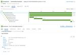
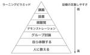
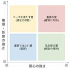

Timee Product Team Blog
https://tech.timee.co.jp/
タイミー開発者ブログ
フィード

OpenTelemetryで環境ごとにObservability Backend（Jaeger、Datadog）を切り替えてエンジョイしてみたよ
Timee Product Team Blog
こんにちは！ タイミーでPlatform Engineerをしている @MoneyForest です。 こちらは Timee Product Advent Calendar 2024 の10日目の記事です。 2024年8月に入社して、幸いにもチームメンバーにも恵まれて楽しく働いています。 個人的にキャッチアップがあまりできていなかった OpenTelemetry を題材にして実装をしてみたので、ここから得られた気づきや知見を共有したいと思います。 はじめに アプリケーションの可観測性（Observability）を担保する上で、APM(Application Performance Monit…
15時間前
Majestic Monolith, そして Citadel 1
1
Timee Product Team Blog
こちらは Timee Product Advent Calendar 2024 の9日目の記事です。前日は平岡の スクラムマスターが常に意識するべき重要なこと でした。 タイミーでテックリードをしている @euglena1215 です。 最近、Majestic Monolith と Citadel というアーキテクチャ・考え方を知ったのですが、あまり国内では認知度が高くないように感じたので紹介してみたいと思います。 自分が見つけた日本語での記事は モノリス亜種のアーキテクチャ(Modular MonolithとかMajestic MonolithとかCitadel Architectureとか…
2日前

学びと経験のアウトプットをしよう！ 2
Timee Product Team Blog
Timee Advent Calendar 2024 6日目の記事です。 タイミーでスクラムマスター（以下、SM）/アジャイルコーチを担当している正義です！ この記事では 学習したことや学んだことは、どんどんアウトプットするといいよ！ どのようなアウトプット方法があるのか？ というお話をします。 なぜアウトプットをするのか？ 1. 自身への定着 それは「学習に対する能動性を向上し、自身の記憶としてより定着させるため」です。 よく見かけるラーニングピラミッドのように、能動的な活動になるにつれて定着しやすくなります。 また、活動によって学習に対するアプローチの深さが変わってきます。 https:/…
4日前

スクラムマスターとリーダーとプロジェクトマネジメント 1
Timee Product Team Blog
Timee Advent Calendar 2024 6日目の記事です。 タイミーでスクラムマスター（以下、SM）/アジャイルコーチを担当している正義です！ この記事では SMに求められるリーダーの性質は何か SMもプロジェクトマネジメントに関する知識を得ておくと良い というお話をします。 スクラムマスターに求められるリーダーの性質は色々ある SMはどのようなリーダーであるべきか、色々な観点で話されているのを見かけます。 スクラムガイドから読み取ろうとしたり、実践ベースで考えたり、学術的な観点などがあります。 (過去に弊社SMが登壇した際の資料もご紹介します！) https://speaker…
4日前

DuckDB を使ったデータ品質保証の実践 33
Timee Product Team Blog
この記事は Timee Advent Calendar 2024 シリーズ 1 の5日目の記事です。 はじめに こんにちは。タイミーの DRE チームの chanyou です。2024年の3月に DRE チームにジョインして、社内のデータ基盤を作って運用しています。 DuckDB を使ってデータ基盤で扱うデータの品質を保証し始めたので、その内容をご紹介します。 データ品質と完全性 タイミーのデータ基盤で重視しているデータ品質 タイミーでは、DMBOK を参考に以下のデータ品質を重視して設計や日々の運用を行っています。 特性 意味 完全性 データが欠損していないか 適時性 必要なときにすぐにデー…
6日前
AndroidアプリでFirebase Remote Config を使ったABテスト実装時に遭遇した罠（不具合事例紹介）
Timee Product Team Blog
こんにちは！タイミーでAndroidエンジニアとして働いている @orerus ことmurataです。今回は弊社のアプリ開発チームで経験した、Firebase Remote Config（以下 RemoteConfig）を使用したABテスト実装時のトラブルと、その再発防止策について共有いたします。 はじめに モバイルアプリ開発において、ABテストは機能改善の効果を測定する上で重要な手法の一つです。今回は、私たちが実装したABテストで発生した予期せぬ動作と、そこから学んだ教訓についてお話しします。 おことわり なお、今回の話はRemoteConfing自体に問題があるというものではなく、使用方法…
7日前
Android Chapter のリリースワークフローを紹介します 1
Timee Product Team Blog
はじめに この記事は Timee Advent Calendar エンジニアリングパート 3日目 担当は Android Chapter の tick-taku です。 来月でタイミーに入社して1年になります。Rails など新しいことにチャレンジしたり DroidKaigi や RubyKaigi など様々なカンファレンスに参加させてもらったりと濃い体験をさせてもらえて、この1年長かったような短かったようなという不思議な気持ちです。 1年間何やったかなと振り返ってみて Hilt やデザインシステムの導入など開発の基盤となることをメインにやっていたな〜と思ったので、この記事では入社直後からやっ…
8日前

タイミー、CREはじめました
Timee Product Team Blog
このエントリは「Timee Advent Calendar 2024」の12月2日分のエントリーです。 私は誰？ 2024年5月入社した山田といいます。 ニックネームは「やまけん」とみんなから呼ばれています。 本名より浸透しているので、社員の中には本名を知らない方も一定いる(らしいです)。 productpr.timee.co.jp 前職では、オンライン商談システムを展開するベルフェイスでCREチームのマネージャーをやっておりました。 note.com タイミーは現在、累計ワーカー900万人にご利用いただいているサービスとなっています。 これからも多くの方々にいいサービスを提供し続けられるよう…
8日前
認定スクラムマスター研修で得た気づきと、その後の歩み
Timee Product Team Blog
タイミーのsyam(@arus4869)です。アドベントカレンダーの初日を担当します！ 2024年も残りわずか。今年中にやりたかったことの一つが、6月に参加した「アトラクタの認定スクラムマスター研修」の振り返りをまとめることです。この研修では、スクラムの理論を実践しながら学び、多くの気づきと学びを得られました。 私はスクラムマスターではありませんが、チームと共にスクラムを実践する立場です。研修を通して得た知見を、開発者目線で共有したいと思います。同じようにスクラムを学んでいる方々の参考になれば幸いです。 研修の内容と学び 研修中の様子 6月に参加した「アトラクタの認定スクラムマスター研修」は、…
10日前
Lookerで全社のデータ活用を推進した話
Timee Product Team Blog
こんにちは、タイミーのデータアナリティクス部でデータアナリストをしているmihashiです。普段は主にタイミーのプロダクトに関する分析業務に従事しています。 今回は前期に社内で取り組んだデータ活用推進に関する事例を共有できればと思います。 前提 タイミーでは、全社のデータ利活用ツールとしてLookerを利用しています。これまでもより多くのメンバーにLookerを活用してもらうために、定期的に講習会を開催してきました（以下の記事も参照してください！） 社内向けLooker講習会のご紹介 少人数制でLookerの講習会をやってみた話 なぜLookerでデータ活用を推進する話になったのか 1点目は、…
11日前
LeSS' Yoaké（レスの夜明け） Asia 2024に参加して感じたことをトークしてみました！
Timee Product Team Blog
こんにちは。今回はLeSS' Yoaké（レスの夜明け） Asia 2024 というカンファレンスに参加したメンバーの内、3名で記憶に残ったセッションやトークについてざっくばらんに会話をしてみたので、その内容を一部編集したうえでブログにまとめさせていただきます。 登場人物の紹介 raz プロダクトエンジニア。昨年まではスクラムマスターをしていました。 maho バイブスキング。昨年からスクラムマスターをはじめました。 shihorin スクラムマスター。2024年5月タイミーにジョイン。 印象に残ったセッションやトークはなんですか？ Last Day午前中のOST（オープン・スペース・テクノロ…
21日前
Kaigi on Rails2024 に参加しました
Timee Product Team Blog
タイミーの新谷、亀井、甲斐、須貝です。 Kaigi on Rails 2024 が10月25日、26日の2日間で開催されました。タイミーは昨年に引き続きKaigi on Railsのスポンサーをさせていただきました。 また、タイミーには世界中で開催されているすべての技術カンファレンスに無制限で参加できる「Kaigi Pass」という制度があります。詳しくは以下をご覧ください。 productpr.timee.co.jp この制度を使ってオフラインでは6名のエンジニアが参加しました。 ライブ感ある集合写真 参加して聞いたセッションのうち印象に残ったいくつかをピックアップしてご紹介します。 Key…
1ヶ月前
BigQuery + Looker Studioでt検定した話
Timee Product Team Blog
こんにちは！タイミーでデータアナリストをしているkantaと申します。 普段はマーケティングの皆様とCM施策やCRM関連の分析を担当したり、他部署向けの講習会を企画したりしております。11月から半年ほど育休を取得予定のため、育休前最後の仕事（？）として当ブログの執筆を担当いたします。 さて、今回は「BigQuery + Looker Studioでt検定した話」と題しまして、その方法をご紹介できればと思います。 なぜ BigQuery + Looker Studioでt検定をしたいのか？ BigQuery + Looker Studio でt検定する手順 1. UDFの作成 1-1. Java…
1ヶ月前
タイミーデータサイエンスグループの働く環境について
Timee Product Team Blog
自己紹介 こんにちは。タイミーのデータエンジニアリング部 データサイエンスグループ所属の吉川です。 1年前にタイミーに入社し、データサイエンティストとして日々業務に取り組んでいます。 前職では大手ゲーム会社で全社のCRMや離脱予測のモデル構築を担当していましたが、縁あってタイミーに入社することになりました。 まず入社後のミッションは「データを活用したプロジェクトの立ち上げ」でした。 立ち上げにあたり、何に取り組むか、社内の問題を探索し、下記のようなビジネス面とデータ活用面の2軸で取り組む領域やテーマの選定を行いました。 ビジネス面：ポテンシャルがあり、ビジネスインパクトが大きいか データ活用面…
1ヶ月前
LeSS Yoake ASIA 2024 Day5 レポート
Timee Product Team Blog
スクラムマスターの吉野です！ 株式会社タイミーはLeSS Yoake ASIA 2024のスポンサーとして参加し、私も招待チケットを利用して現地に行ってきました！ 今回の記事はDay5のレポートです！ Day1のレポートはこちら セッション : 企業変革の現実から考える「組織レベルのアジャイル」への道のり (ABeam Cunsulting) 1つのチームから複数チームへ拡大するパターン 組織改革の形で、大規模な組織にアジャイルを適応するパターン 2軸にて、組織へアジャイルを広めていくストーリーが聞けました！ 前者については、スクラムが成功したチームがあっても、2つ目以降のチームに同じ形で導入…
1ヶ月前
予測の不確実性を定量化できるConformal Predictionをサクッと解説する
Timee Product Team Blog
こんにちは、タイミーでデータサイエンティストとして働いている小栗です。 今回は、機械学習モデルの予測の不確実性を定量化する手法であるConformal Predictionについてご紹介します。 Conformal Predictionとは 機械学習モデルの予測値がどの程度信頼できるか知りたい場面は多いと思います。 医療診断のように誤った予測が重大な問題につながる状況でモデルを使用する場合、予測の不確実性を定量化してそれを元に判断できると嬉しいです。 Conformal Prediction（以下CP）はUncertainty Quantification（不確実性の定量化。以下UQ）のパラダ…
1ヶ月前
LeSS Yoake ASIA 2024 Day1 レポート
Timee Product Team Blog
こんにちは！ スクラムマスターを担当している吉野です！ 株式会社タイミーはLeSS Yoake ASIA 2024のスポンサーとして参加し、私も招待チケットを利用して現地に行ってきました！ 本記事ではDay1のコンテンツのいくつかをレポートします！ Opening Session オープニングキーノートは、Craig Larmanさんによる "AI & HR: Evolving Organizations in an AI World" というタイトルで、AIが私たちにもたらしてくれる変化を、AIができることの紹介、AIの変化に合わせて個人の役割の変わり方からチームのあり方の変化、と、徐々にス…
1ヶ月前
データアナリストの講義を大学で行ってきました！
Timee Product Team Blog
こんにちは！ データアナリストの@takahideです。 タイミーではプロダクト向き合いの分析業務を行なっています。 先日、東京都立大学の経済経営学部にてデータアナリストの講義を行わせて頂きました。 データアナリストの魅力やアカデミックな知の重要性に改めて向き合うことができたので、ご紹介できたらと思います。 内容は以下になります。 講義の背景 講義内容 事業と組織に関して データアナリストの業務内容 アカデミックな知の活用 講義の御礼 最後に We’re Hiring! 講義の背景 講義に至った背景は、知り合いでもある米田泰隆准教授とお話しした際に、データアナリストの業務内容が学生の皆さんの興…
1ヶ月前
CircleCIからGitHub Actionsへ移行、テスト実行時間をp95で15分から6分に短縮！移行時の課題と解決策
Timee Product Team Blog
エンジニアリング本部 プラットフォームエンジニアリングチームの徳富です。我々のチームでは、CIパイプラインの効率化と開発体験の向上を目指し、CircleCIからGitHub Actionsへの移行を進めてきました。移行によってテスト・静的解析（以降CIと記載する）の実行時間をp95で9分短縮しましたが、この移行にはいくつかの課題もありました。今回は移行の背景や移行時の苦労について紹介します。 本記事のまとめ CircleCIからGitHub Actionsに移行し、CI実行時間をp95で9分短縮 並列実行やテスト結果の連携における課題を解決し、効率化を実現 テスト結果のPR通知や分割テストの仕…
2ヶ月前
dbt coalesce 2024 1日目のセッションを徹底解説(okodoon視聴分)
Timee Product Team Blog
こんにちは。okodoooonです🌵 ラスベガスに来てから、同行しているメンバーと手分けをしてセッションを聞いて、知見をまとめる作業に追われており、なかなかハードな日々を過ごしておりました。 今回は初日に聞いた5つのセッションがどれも知見に溢れるものだったので、そちら紹介していきたいと思います💪 スライドが公開されたり他メンバー担当分の記事が上がり次第リンクなど追って貼っていきます。(2日目以降のやつも頑張って書いております) 目次 Data alone is not enough（訳：データだけでは不十分である） 概要 セッション内容の紹介 感想 Breaking the mold: A s…
2ヶ月前
【イベントレポート】タイミーのレコメンドにおける ABテストの運用
Timee Product Team Blog
イベント概要 2024年9月18日に「GENBA #4 〜データサイエンティストの現場〜」と題してタイミー、ビットキー、AbemaTVの3社でデータサイエンスに関する合同勉強会を開催しました。 今回はそちらの勉強会からタイミーのデータサイエンティストである小関さん（@ozeshun_）の発表をイベントレポート形式でお伝えします。
2ヶ月前
Vertex AI Pipelinesを効率的に開発するための取り組み(part2)
Timee Product Team Blog
こんにちは、タイミーのデータエンジニアリング部 データサイエンス（以下DS）グループ所属のYukitomoです。 DSグループではMLパイプラインとしてVertex AI Pipelinesを利用しており、その開発環境の継続的な効率化を進めていますが、今回はここ最近の変更点を紹介したいと思います！ Vertex AI PipelinesについてはGoogle Cloudの公式ページや、前回の記事を参照ください。 モノレポ環境に移行 当初はパイプライン毎にレポジトリを用意していました。しかしながら新規でパイプラインを起こす度にレポジトリの作成から行うのは、 ちょっとした“作業”ではあるのですが気…
2ヶ月前
PyCon JP 2024参加レポート
Timee Product Team Blog
みなさんこんにちは。タイミーのデータエンジニアリング部 データサイエンスグループ所属の菊地と小関です。 2024年9月27日（金）、28日（土）に開催されたPyCon JP 2024に参加してきました。今回はPyCon JP 2024の雰囲気と、特に興味深かった&勉強になったトークセッションをいくつかピックアップしてお届けしようと思います！ PyCon JPとは PyConJPは1年に1度開催されていて、今年はTOC有明コンベンションホールにて9月27日（金）、28日（土）の2日間にわたって開催されました。 概要については、PyCon JP 2024の「What is PyCon JP」をその…
2ヶ月前
新規プロジェクトでのルールベース手法の活用
Timee Product Team Blog
こんにちは、株式会社タイミーでデータサイエンティストをしている貝出です。直近はカスタマーサポートの業務改善に向けたモデルやシステムの開発を行っております。 新規プロジェクトを始めるにあたって、予測や検知の機能といった複雑な課題に取り組む必要がある際、機械学習モデルを使うことを検討される方も多いと思います。しかし、Google の定めた Rules of Machine Learning: Best Practices for ML Engineering でも記載されているように、必ずしも最初から機械学習モデルを使うことが最適とは限りません。データの不足や問題の不明確さから、機械学習が効果的に…
2ヶ月前
dbt Coalesce 2024 のKeynote「Innovating with dbt」現地レポート
Timee Product Team Blog
2024年10月7日から10日（現地時間）にかけて、dbt Coalesce 2024がラスベガスで開催されています。 私たち株式会社タイミーからは、4名が現地参加しました （※）。 今回は、カンファレンスの最初のKeynoteについてご紹介したいと思います。 このKeynoteでは、dbtのビジョンや今後の新機能リリースに関する熱いトピックが多く取り上げられ、非常に刺激的な内容となりました。 以下がアジェンダです。 イントロ 新機能の紹介 dbt Copilot Visual Editing Experience Advanced CI Data health tileの埋め込み dbtセマ…
2ヶ月前
Real-World Product Deployment of Adaptive Push Notification Scheduling on Smartphones を読んでみた
Timee Product Team Blog
株式会社タイミーでデータサイエンティストをしている渡邉です。 タイミーでは、スマートフォンへのプッシュ通知を利用してタイミーを利用されているワーカーの方にキャンペーン情報やおすすめのお仕事を通知しています。通知した情報をワーカーの方が開封することで初めて詳細な情報を確認することができるのですが、タイミーのアプリ以外のアプリでもプッシュ通知を利用されていると、様々なアプリから日々大量の通知を受け取っているという状況が発生しているかと思います。 このような状況下では、ワーカーの方々が重要な情報を見逃したり、通知の頻度が多すぎてストレスを感じたりする可能性があります。そのため、より効果的でユーザーフ…
2ヶ月前
DroidKaigi 2024登壇レポート
Timee Product Team Blog
ふなち（https://x.com/_hunachi）です。 DroidKaigi 2024で登壇してきました！ 初めてのDroidKaigiでの登壇はとても緊張しましたが、良い経験になりました。 登壇内容 タイムテーブル 2024.droidkaigi.jp 登壇資料 speakerdeck.com 登壇動画 www.youtube.com この内容で登壇した経緯 昨年から今年の頭にかけて、基本一人でもくもくPDFを表示するコードを書く機会がありました。 話はそれますが、iOSでPDFを表示させたいとなった時、公式のFrameworkであるPDFKit（https://developer.a…
2ヶ月前
DroidKaigi 2024 参加レポート
Timee Product Team Blog
9/11~9/13 にかけて DroidKaigi 2024 が開催され、タイミーの Android アプリエンジニアチームが参加してきました。 はじめに 9月にジョインされた hunachi が登壇しています。Android の PDF Viewer に関する歴史や詳細な実装からライブラリの紹介まで PDF Viewer を網羅したセッションとなっているのでぜひアーカイブでご覧ください。 2024.droidkaigi.jp タイミーではブースも出しておりノベルティやタイミンの写真を撮りに来られる方など盛況でした。足を運んでいただいた皆様ありがとうございます！ この DroidKaigi か…
2ヶ月前
Steep エラーリファレンスを作りました（2024/09/30 時点）
Timee Product Team Blog
タイミーでバックエンドのテックリードをしている新谷（@euglena1215）です。 タイミーでは RBS の活用を推進する取り組みを少しずつ進めています。意図はこちら メンバーと雑談していたときに「steep check でコケたときにその名前で調べても全然ヒットしないので型周りのキャッチアップが難しい」という話を聞きました。 いくつかのエラー名でググってみたところ、 Ruby::ArgumentTypeMismatch や Ruby::NoMethod など有名なエラーはヒットしますがほとんどのエラーはヒットせず、ヒットするのは Steep リポジトリの該当実装のみでした。 これでは確かに…
2ヶ月前
Aurora MySQLのアップグレード後ロールバック方法を検討してみた
Timee Product Team Blog
エンジニアリング本部 プラットフォームエンジニアリング1G 橋本です。我々のグループでは業務の柱の一つとして、クラウドインフラの構築・運用を行っています。その中でAmazon Aurora MySQL（以下、AuroraもしくはAurora MySQL）のアップグレードがビジネスインパクトが大きい作業となりました。本記事はAurora MySQLアップグレード方法の検討について記述した投稿になります。 この記事のまとめ 前提情報や課題感について Blue/Green Deploymentsによるアップグレードとは もしもの場合はロールバックしたい 検討したロールバック手法 DMS方式 リストア…
3ヶ月前